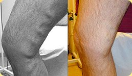

Unikalna technologia
dla zdrowia i urody Twoich nóg bez żylaków!
dopuszczony do użycia
- Efekt gwarantowany
- Naturalne składniki
- Unikalna technologia
zostało 5 paczek w specjalnej cenie!
oferta kończy się za
Zdowie i lekkość Twoich nóg z kremem Varikosette
- Doskonałe lekarstwo, które
zapobiega i leczy
żylaki - Stymuluje normalny
krwiobieg w zylach - Szybko usuwa
oznaki zmęczenia nóg - Nawilża
i odżywia skórę
Siła kremu "Varikosette" kryje się w jego unikalnej kompozycji, która łączy w sobie
składniki najważniejsze dla skutecznego leczenia żylaków i czyni skórę Twoich nóg
piękną
i zdrową
Troxerutin
- przynosi ulgę ciężkim i zmęczonym nogom
- zmniejsza przepuszczalność naczyń krwionośnych i ich kruchość
- łagodzi obrzęki i stany zapalne
Kasztanowiec i liście brzozy
- czynią ścianki żył mocniejszymi i elastycznymi
- usuwają mikrouszkodzenia skóry
- przynoszą ulgę w bólu, obrzęku i zmęczeniu nóg
Olejki eteryczne cytrynowy, sojowy i kokosowy
- deodoryzują i redukują intensywność pocenia się
- atténuent les sensations de sécheresse et de peau tendue
- pozostawiając uczucie odżywiają skórę nóg
Absynt, mentol
rumianek i pokrzywa
- nadają nogom lekkość i siłę
- odświeżają i dezynfekują skórę nóg
- Przyśpieszają gojenie mikro pęknięć naczyń krwionośnych
Kofeina, MIÓD i
Ginkgo biloba
- dbają o skórę i tonizują ją,
- poprawiają krążenie krwi
- przyspieszają metabolizm tkanek
- przyspieszają odnawianie komórek
Regularne używanie kremu Varikosette
przez kilka tygodni prowadzi do widocznego zmniejszenia objawów żylaków!
efekty uzdrawiające 1 0 0 %
Produkt przeszedł testy kliniczne i otrzymał certyfikaty w Twoim kraju.
Widoczna
poprawa już po 1,5 tygodnia stosowania! Chcesz spróbować?
-

"Ten krem skutecznie usuwa widoczne naczynka i żyły z Twoich nóg. Po użyciu następuje znaczące zwiększenie lekkości, zmniejszenie bólu i znika odczucie ściągania."
Maria, 27
-

"Po pracy zawsze używam kremu Varikosette. Szybko usuwa opuchliznę i zmęczenie, wyraźnie zmniejszyła się także potliwość moich stóp. Rano moje nogi są w pełni wypoczęte.Polecam go każdemu!"
Mikołaj, 35
-

"Krem Varikosette naprawdę uratował mi życie. Używam go codziennie. Kilka tygodni po rozpoczęciu kuracji zauważyłem, że żylaki wyraźnie się zmniejszyły, moje nogi znacznie szybciej odpoczywały, odczuwałem lekkość i miałem energię".
Julia, 46
Regularne stosowanie produktu, przez
1,5 tygodnia
Son utilisation régulière pendant une semaine et demi dało pierwsze widoczne oznaki poprawy w leczeniu żylaków. Krem nawilży i wygładzi skórę Twoich nóg, usunie mikrouszkodzenia i pęknięcia.
Można powiedzieć, że krem jest nie tylko bezpieczny w użyciu, ale jego długotrwałe stosowanie jest najlepszą metodą zapobiegania i leczenia żylaków!
Taka skuteczność i szybkość działania są możliwe dzięki naturalnym składnikom kremu Varikosette. Produkt przeszedł wszystkie niezbędne testy laboratoryjne i potwierdzono, że jest w pełni bezpieczny dla użytkowników. Tysiące pozytywnych opinii z całego świata to dodatkowa gwarancja skuteczności!
Piękno i zdrowie Twoich nóg dzięki naturalnym składnikom kremu.
Krem Varikosette jest certyfikowanym produktem, który spełnia standardy jakości. Uważaj na podróbki! Krem Varikosette jest sprzedawany wyłącznie w oryginalnym opakowaniu!
Skuteczność kremu Varikosette
została udowodniona i potwierdzona przez tysiące
zadowolonych klientów z całego świata!
Zamów teraz
Opinie specjalistów
Liczne przedstawicielki płci pięknej (a także kilku mężczyzn) mają kłopoty z uczuciem ciężkości i bólem nóg. Najczęściej nie idą z tym do lekarza dopóki na nogach nie pojawią się widoczne oznaki, co oznacza pogłębienie objawów choroby i żylaki. Jak każdy lekarz wierzę, że lepiej zapobiegać niż leczyć. Dlatego zawsze polecam krem Varicosette swoim pacjentom.
Działa on naprawdę skutecznie, usuwając widoczne oznaki żylaków i zapobiega zaostrzaniu się choroby. Krem Varikosette szybko i bez trudu pozwoli Ci pozbyć się uczucia "zmęczonych nóg" nadając im lekkość i wzmacniając nawet po ciężkim dniu pracy.
Czy to szkodliwe?
Krem Varikosette składa się wyłącznie z naturalnych składników, nie zawiera parabenów, barwników sztucznych substancji zapachowych ani produktów GMO. Produkt otrzymał niezbędne certyfikaty i nie wykazuje działań ubocznych.
Kuracja
Czas trwania i skuteczność kuracji zależy od czynników indywidualnych i stadium choroby. Średnio, kuracja tym kremem trwa 1,5-2 tygodni, po tym czasie efekty stają się widoczne.
Gdzie kupić
W Polsce, jedynym oficjalnym dostawcą kremu Varkosette jest nasza firma. Możesz złożyć zamówienie na stronie internetowej!
Jak zamówić krem Varikosette?
-
Wypełnij formularz
zamówienia poniżej -
Zaczekaj na telefon
operatora -
Dostępna jest
kartą online albo
przy odbiorze kurierowi.
Happy hours
Varikosette